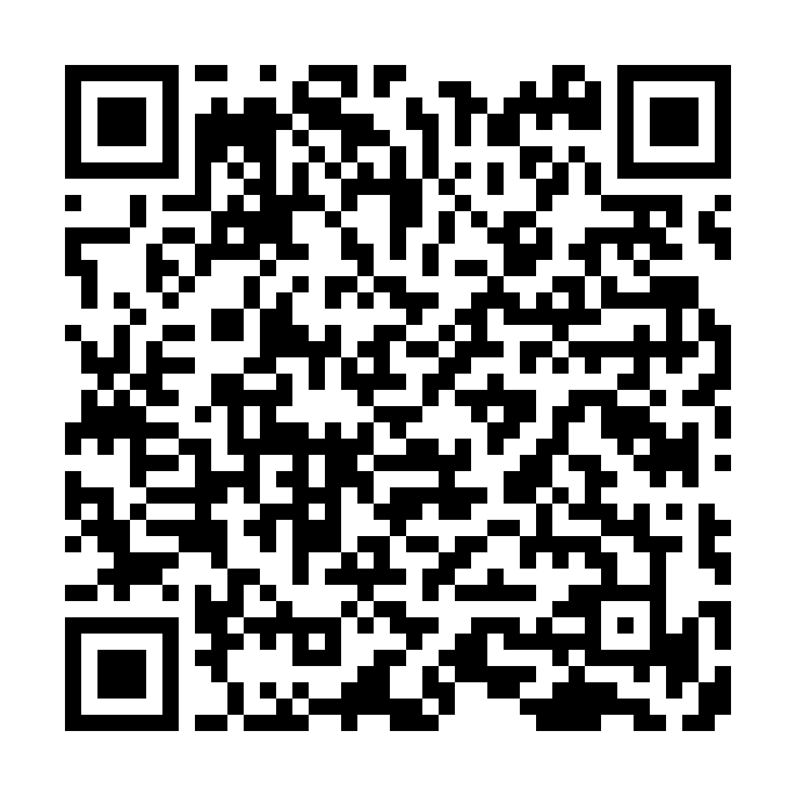
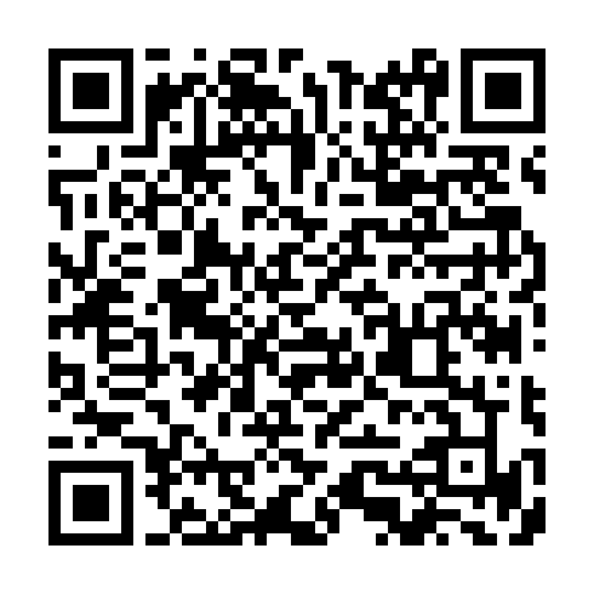
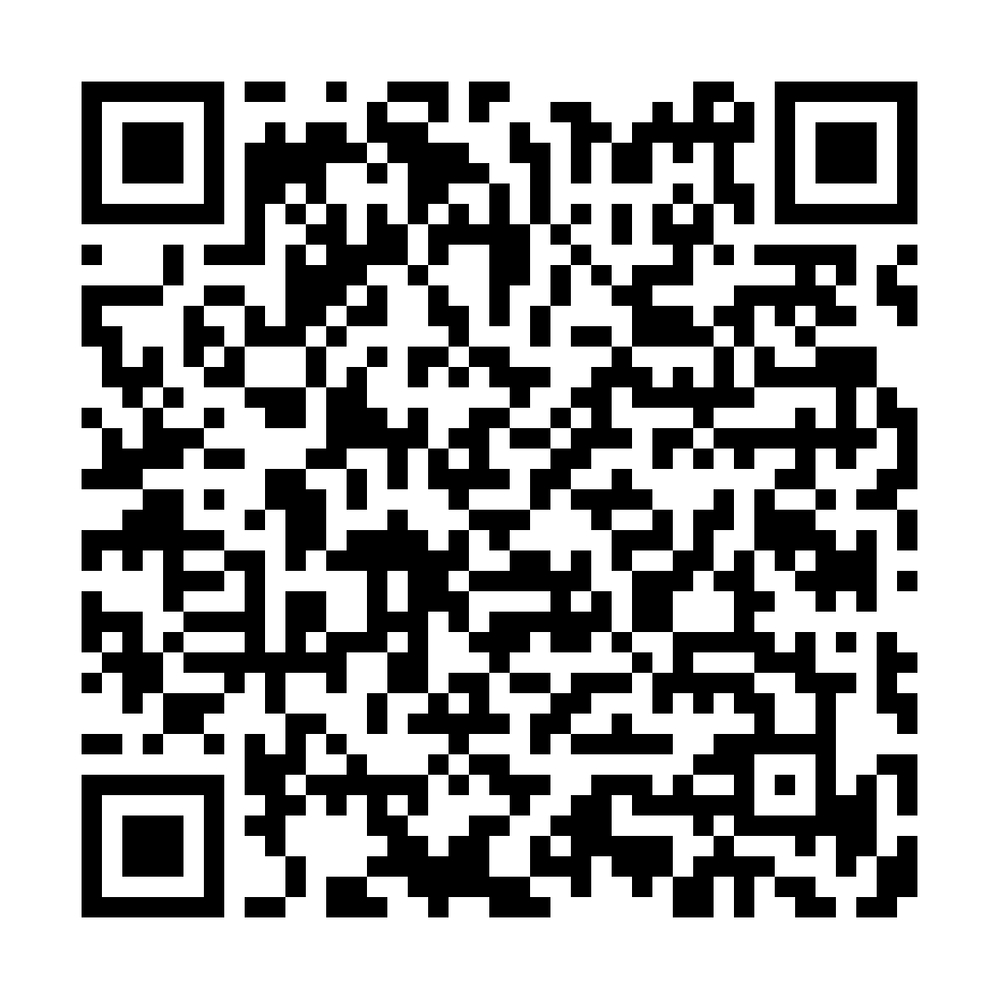
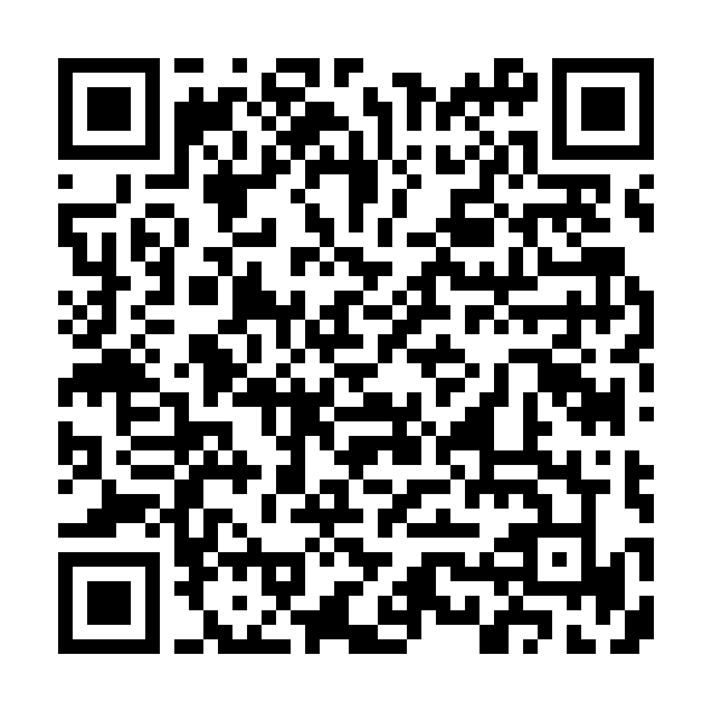
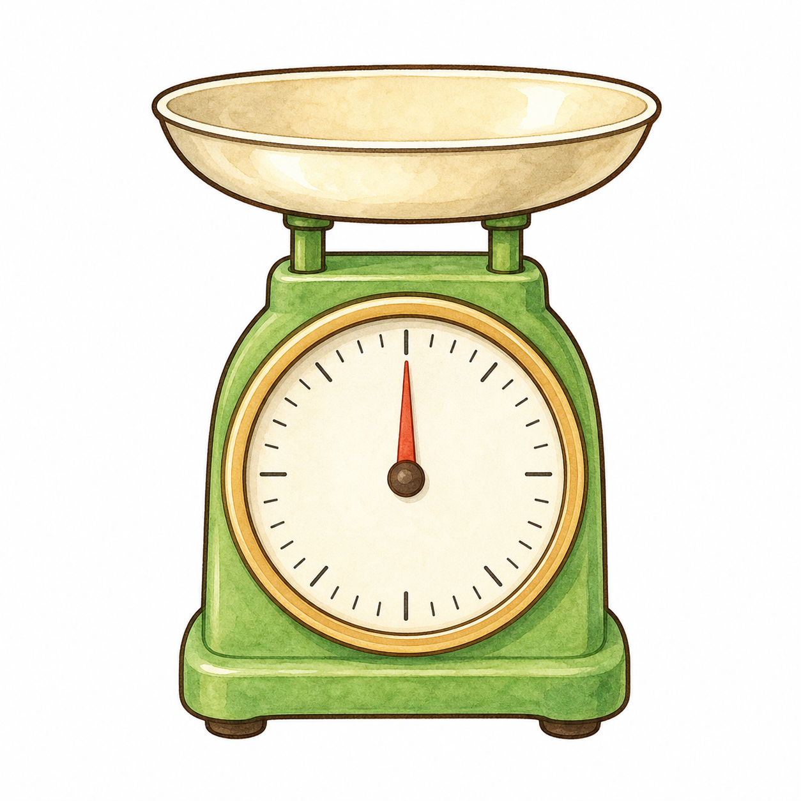
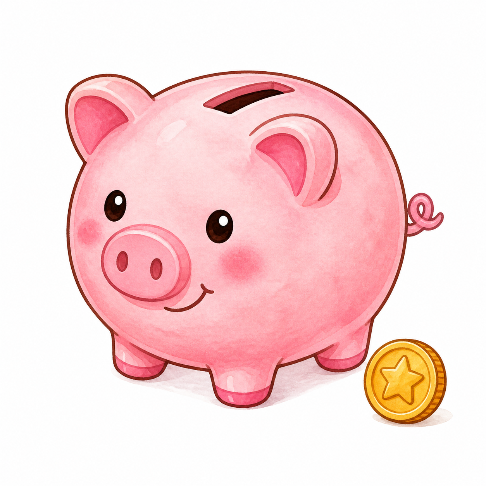
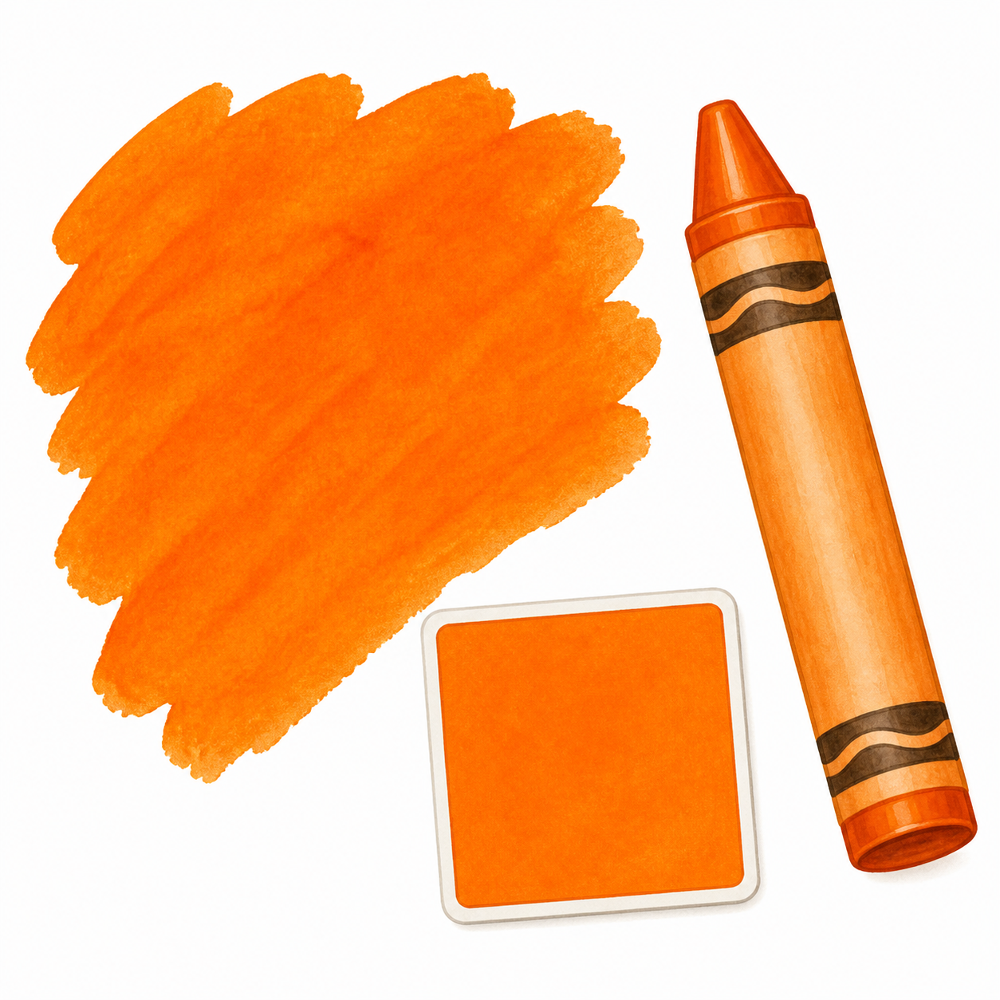
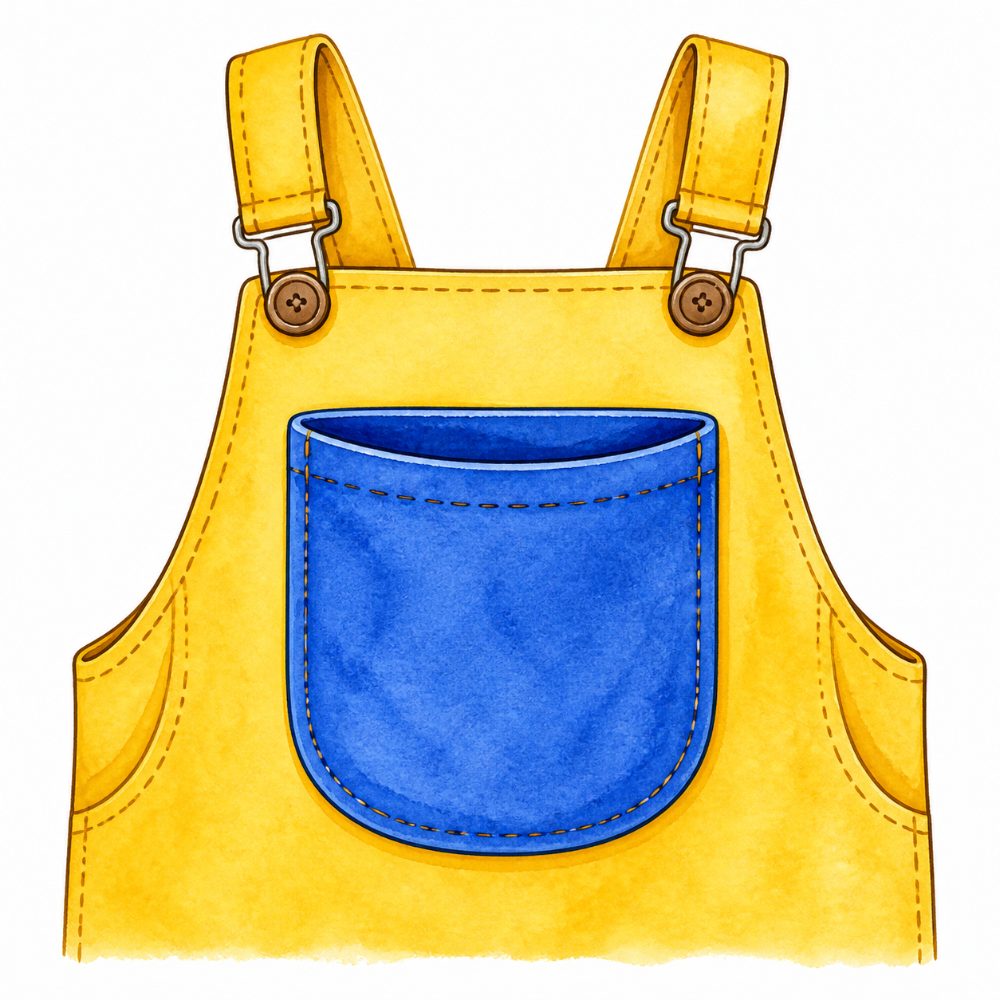
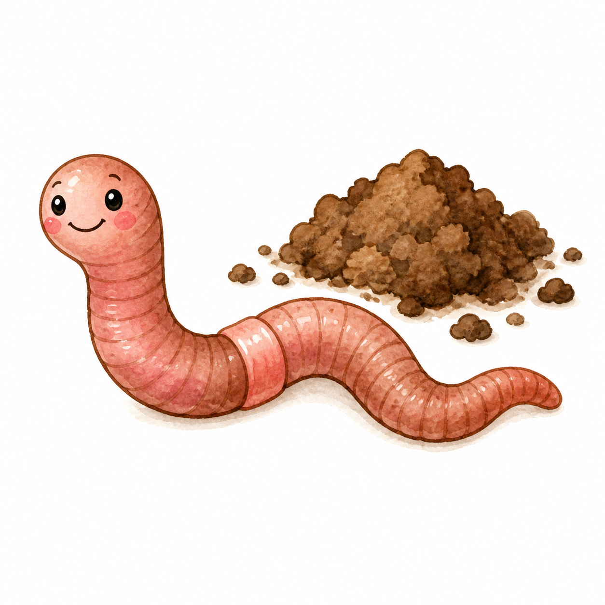
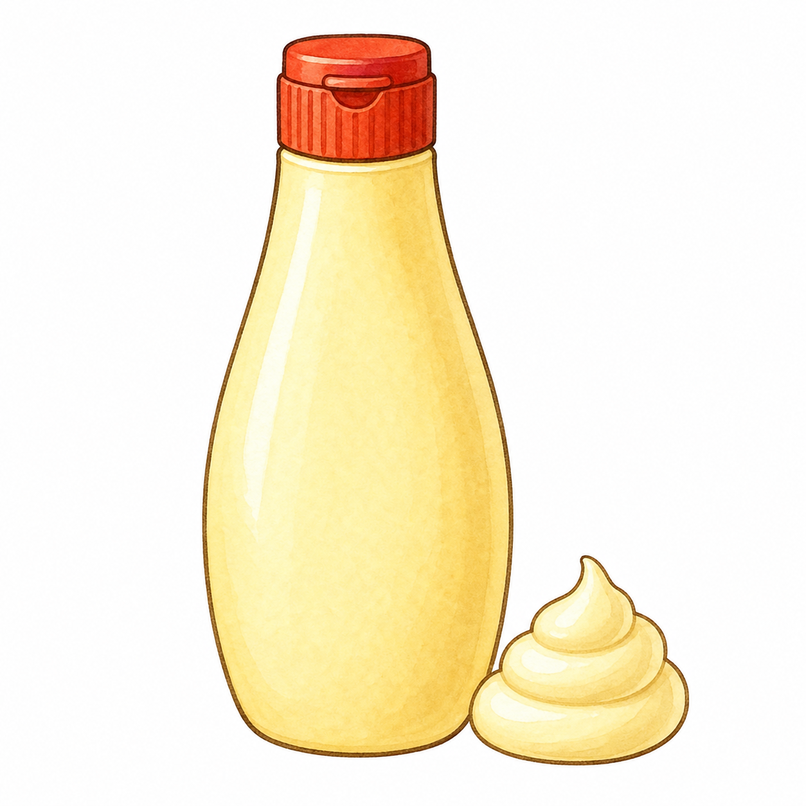

1장 / 그림 이야기
지지가 새 모음을 만나요
지지 지렁이의 ㅈ 길이 어어 풍선, 우우 발판, 이이 막대, 으으 쿠션을 차례로 만나요.


ㅈ 길을 먼저 찾고, 자의 ㅏ가 반대쪽을 보면 저, 조의 ㅗ가 아래로 뒤집히면 주라고 배운 글자와 견주어 읽은 뒤 지, 즈까지 붙여 읽는다.

영상 보기

영상 보기

영상 보기

영상 보기






